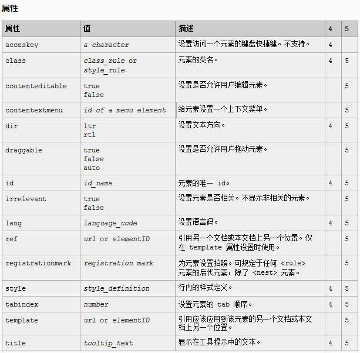
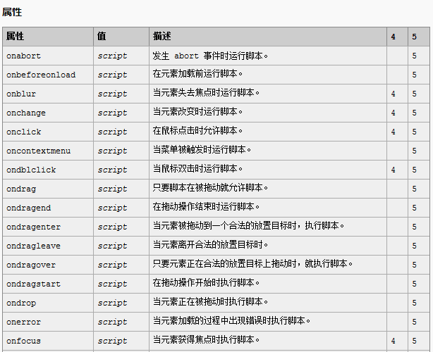
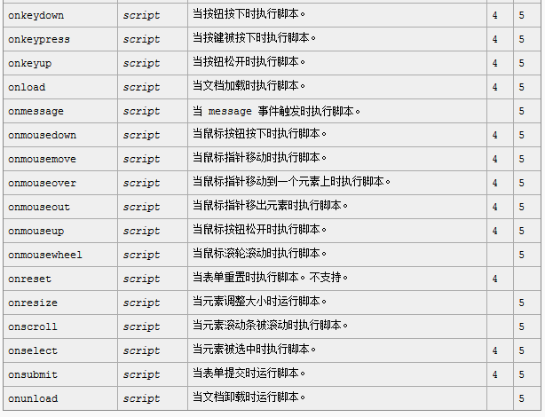

一、html标签中的标准属性
HTML 5 中的新属性：contenteditable, contextmenu, draggable, irrelevant, ref, registrationmark, template。
HTML 4.01 中不再支持的属性：accesskey。
二、html事件中的标准属性
HTML 5 中的新事件：onabort, onbeforeunload, oncontextmenu, ondrag, ondragend, ondragenter, ondragleave, ondragover, ondragstart, ondrop, onerror, onmessage, onmousewheel, onresize, onscroll, onunload。
不再支持的 HTML 4.01 属性：onreset。
 